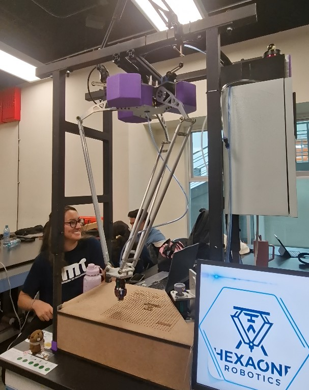

Delta-Roboter – SPS-Programmierung und Bewegungssteuerung
In diesem Projekt entwickelte unser Team einen Delta-Roboter. Mein Schwerpunkt lag auf der SPS-Programmierung und der Bewegungssteuerung. Dabei wurde die mechanische Bewegung des Roboters in eine SPS-basierte Steuerungslogik umgesetzt und anschließend am realen System getestet.

Aufgabe
Bewegungsabläufe des Roboters programmieren und die Steuerung mit dem realen mechanischen System verbinden.
Mein Beitrag
Programmierung der SPS, Umsetzung der Bewegungslogik, Tests und Anpassung der Abläufe sowie HMI-Unterstützung.
Was ich gelernt habe
Wie wichtig das Zusammenspiel von Mechanik, Steuerung und Tests ist, wenn ein Robotersystem zuverlässig funktionieren soll.